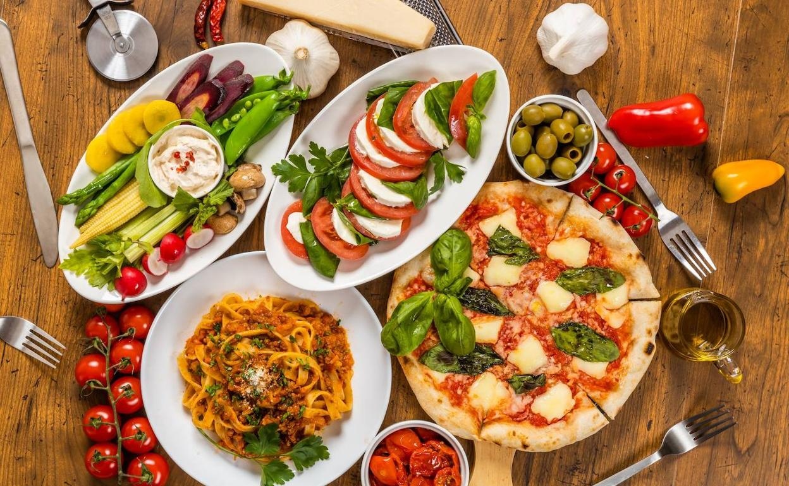
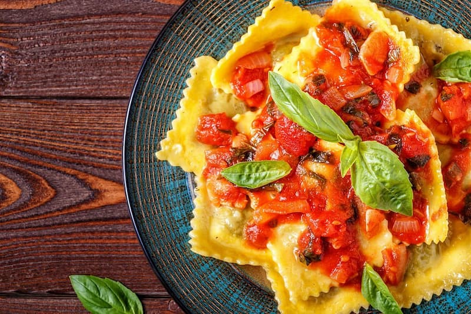
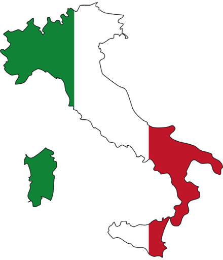

Pizza Napolitana
Uno de los platos italianos más reconocidos mundialmente, originario de Nápoles y declarado Patrimonio Cultural.
Ver más / See more
Descubre la gastronomía italiana
Conoce sus sabores únicos, platos tradicionales, ingredientes frescos, recetas milenarias y costumbres transmitidas por generaciones.
Discover authentic Italian cuisine, its timeless flavors, heritage recipes and warm regional traditions.
Conocer platos / Explore DishesLos pilares de una de las cocinas más queridas y celebradas del mundo.
Uno de los platos italianos más reconocidos mundialmente, originario de Nápoles y declarado Patrimonio Cultural.
Ver más / See more
Una preparación centenaria presente con cientos de variedades y salsas en todas las regiones de Italia.
Ver más / See more
Clásica preparación al horno con láminas de pasta fresca, carne sazonada, bechamel sedosa y queso gratinado.
Ver más / See more
Italia posee una rica diversidad gastronómica: desde los risottos mantecados y polentas del norte alpino, hasta los aromas mediterráneos a base de tomates maduros, aceite de oliva virgen extra y pescados en el sur y las islas.
Rituales y costumbres que definen la auténtica experiencia italiana en la mesa.
El día comienza con un espresso perfecto y culmina al atardecer compartiendo un aperitivo ligero entre amigos antes de la cena.
La pasta nunca se sobrecuece: se busca una textura firme que preserve el sabor del trigo y se integre armoniosamente con la salsa.
La comida en familia es sagrada. Platos como lasaña o ragú cocinado durante horas unen a generaciones enteras alrededor de la mesa.